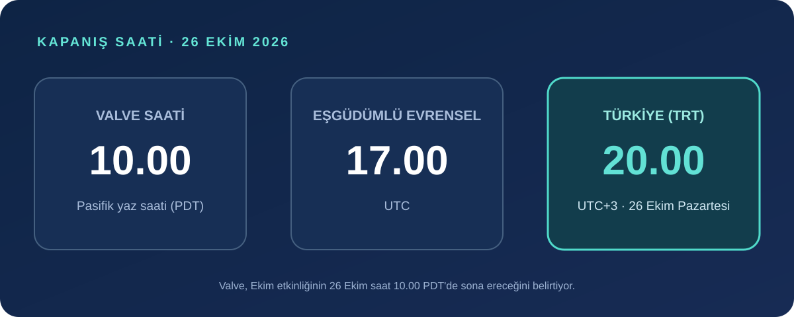
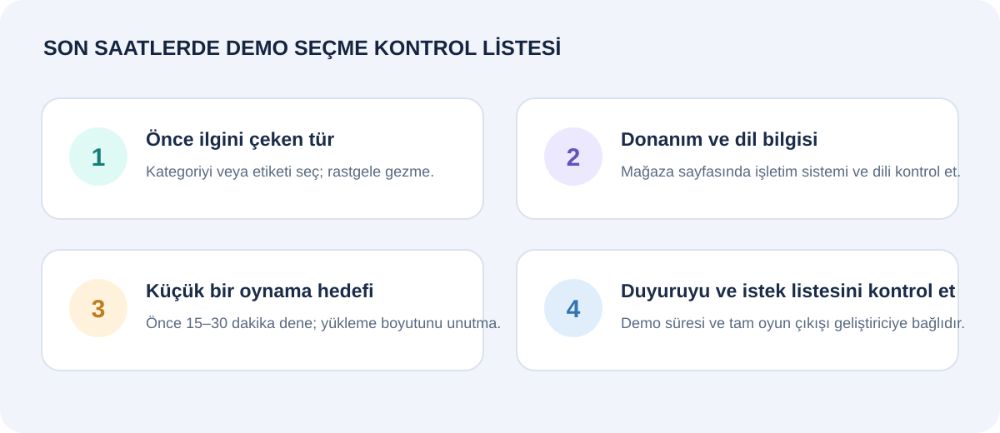

Steam Next Fest’in Ekim 2026 etkinliği bugün, 26 Ekim Pazartesi günü sona eriyor. Valve’ın yayımladığı programa göre kapanış Pasifik yaz saatiyle 10.00; bu, 17.00 UTC ve Türkiye saatiyle 20.00 demek. Son saatlerde yüzlerce oyunu sırayla indirmeye çalışmak yerine, ilgini çeken birkaç demoyu seçip kısa bir deneme planı yapmak daha verimli.
Next Fest, çıkışını henüz yapmamış oyunların oynanabilir demolarını öne çıkaran bir Steam etkinliği. Valve etkinliği oyuncuların demoları denemesi, geliştiricilerle konuşması ve yaklaşan oyunları keşfetmesi için düzenliyor. Demo, tam oyunun yayımlandığı anlamına gelmiyor; her oyunun kapsamını ve çıkış planını kendi mağaza sayfasından ayrıca kontrol etmek gerekiyor.

Kapanış saatine kadar nasıl bir demo planı yapmalı?
Önce mağaza sayfasındaki tür ve oynanış etiketlerine bak. Fragman tek başına oyunun nasıl oynandığını anlatmayabilir; ekran görüntüleri, açıklama ve varsa geliştirici yayını, demoyu indirmeye değip değmeyeceğini daha iyi gösterir. Ardından sistem gereksinimi, desteklenen işletim sistemi, kontrolcü desteği ve arayüz/altyazı dillerini kontrol et. Türkçe dil desteği yazmıyorsa bunu var kabul etme.

- İki veya üç oyunla sınırla. Önce seni gerçekten meraklandıran türü ve oynanış fikrini seç.
- İndirme boyutuna bak. Büyük dosya yavaş bağlantıda kalan etkinlik süresini tüketebilir; küçük bir demo ile başlamak daha mantıklı olabilir.
- Kısa bir ilk deneme yap. İlk 15–30 dakika içinde kontroller, performans ve oyunun temel döngüsü hakkında fikir edin. Demo daha uzunsa, bitirmeye yetişmek zorunda değilsin.
- Beğendiğini istek listene ekle. Bu, oyunu satın almış olmaz; Steam’de çıkış ve duyuru takibini kolaylaştırır. Fiyat, çıkış tarihi ve platformlar değişebileceğinden mağaza sayfasını tekrar kontrol et.
Etkinlik bitince demolar silinecek mi?
Her demo için geçerli tek bir cevap yok. Valve’ın geliştiricilere yönelik SSS sayfası, Next Fest sona erdikten sonra demoyu yayında tutup tutmamaya geliştiricinin karar verdiğini söylüyor. Valve geliştiricileri, oyuncuların demoların hemen kaybolmasından üzülebildiğini belirterek, mümkünse demoyu etkinlikten sonra da açık bırakmayı değerlendirmeye ve kapatacaklarsa bunu oyunculara bildirmeye teşvik ediyor.
Bu nedenle 20.00 etkinliğin bitiş saati olsa da bütün demoların aynı anda Steam’den kalkacağı anlamına gelmiyor. Bazıları erişilebilir kalabilir, bazıları geliştiricinin planına göre kapatılabilir veya güncellenebilir. Özellikle ilgilendiğin bir demo varsa oyunun Steam duyurularını ve geliştirici kanallarını kontrol et; festival sayfasındaki süreyi oyunun kesin kapanış tarihi gibi yorumlama.
Demo ilerlemesi tam oyuna aktarılır mı?
Bunu da oyun bazında kontrol et. Next Fest’e katılan her yapım için ilerleme aktarımını garanti eden genel bir kural yok. Mağaza sayfasında veya geliştiricinin SSS/duyurusunda kayıt dosyası ya da ilerleme aktarımı açıkça belirtilmiyorsa, demoda yaptıklarının tam oyuna geçeceğini varsayma. Demo sürümünde bulunan içerik, performans ve özellikler de tam sürümden farklı olabilir.
Etkinlik sayfasında aradığını bulamazsan
Steam Next Fest sayfasındaki filtrelerle tür, tema ve özelliklere göre daraltma yap. Geliştirici yayını veya oyun sayfasındaki açıklamalar yardımcı olabilir; ancak canlı yayın saatleri etkinlik bitişinden önce sona ermiş olabilir. Önceliği, mağaza sayfasında sistem bilgisi ve dil durumu açık olan ve kısa sürede deneyebileceğin oyunlara vermek pratik bir seçim ölçütü.
Steam, her Next Fest sonrasında en çok oynanan demoları öne çıkaran bir Wrap-Up sayfası da yayımlıyor. Bu liste popülerliği gösteren bir keşif noktasıdır; senin kişisel zevkine göre “en iyi oyunlar” sıralaması olarak okunmamalı. Etkinlik bittikten sonra yeni bir şey keşfetmek istiyorsan listeye göz atabilir, ardından oyunların kendi sayfalarındaki güncel bilgileri kontrol edebilirsin.
Kısa özet
- Ekim 2026 Next Fest, 26 Ekim saat 10.00 PDT’de kapanıyor; Türkiye saatiyle bu 20.00.
- Etkinliğin sona ermesi, bütün demoların otomatik silineceği anlamına gelmiyor; erişimi geliştirici belirliyor.
- Sistem gereksinimi, dil, demo kapsamı ve ilerleme aktarımı oyun sayfasına göre değişir.
- Son saatlerde az sayıda demo seç, kısa dene ve ilgini çeken oyunu istek listesine ekle.
Kaynaklar
- Valve Steamworks: Steam Next Fest Ekim 2026 tarihleri ve programı
- Valve Steamworks: Next Fest SSS ve demoların etkinlik sonrası durumu
- Steam Haberleri: “Steam Next Fest is back!” duyurusu
Son kontrol: 26 Ekim 2026. Saat dönüşümü Türkiye'nin UTC+3 saat dilimine göredir. Demo erişimi ve içerik bilgileri geliştirici tarafından değiştirilebilir; güncel durum için ilgili Steam sayfasına bakın.